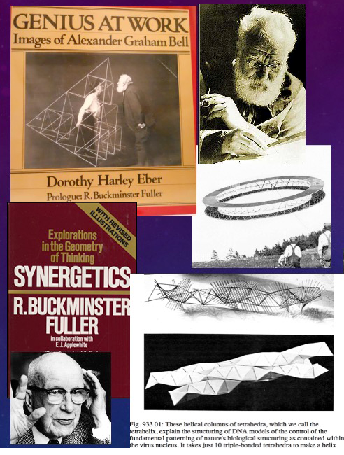
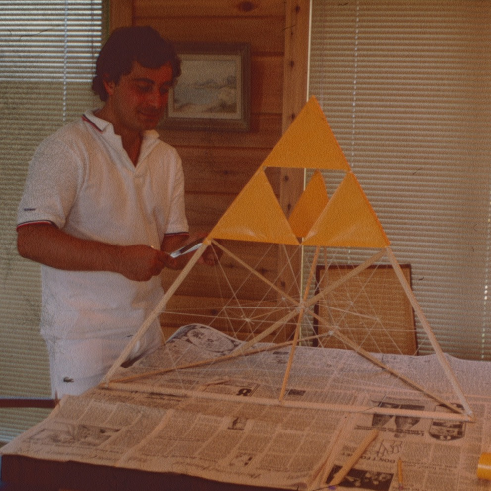
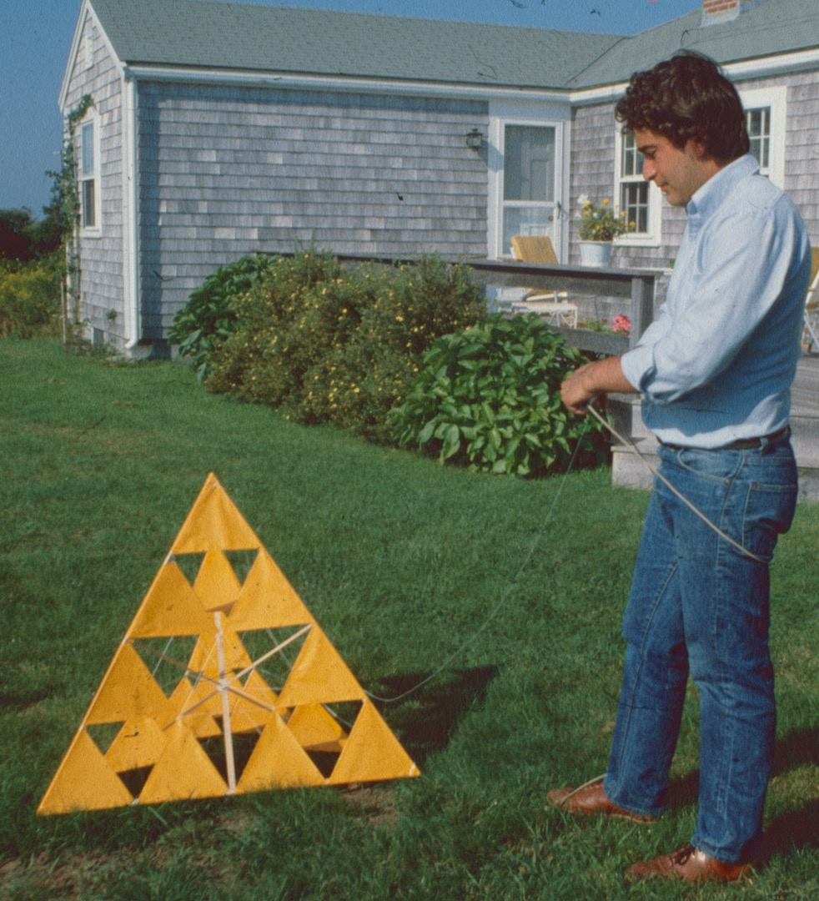
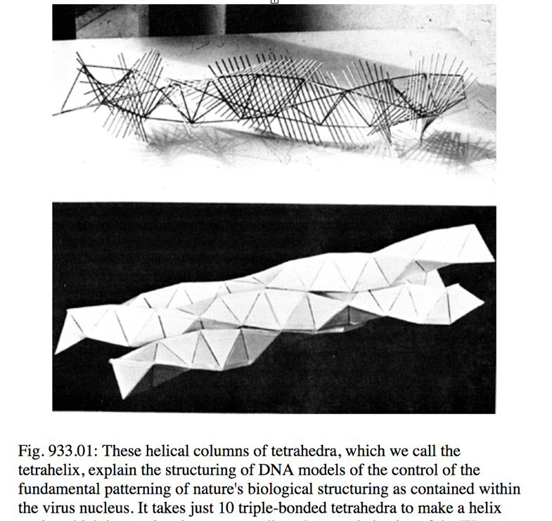
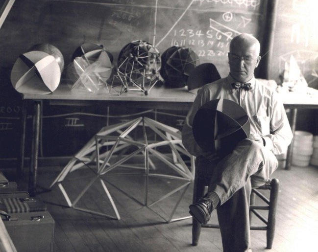
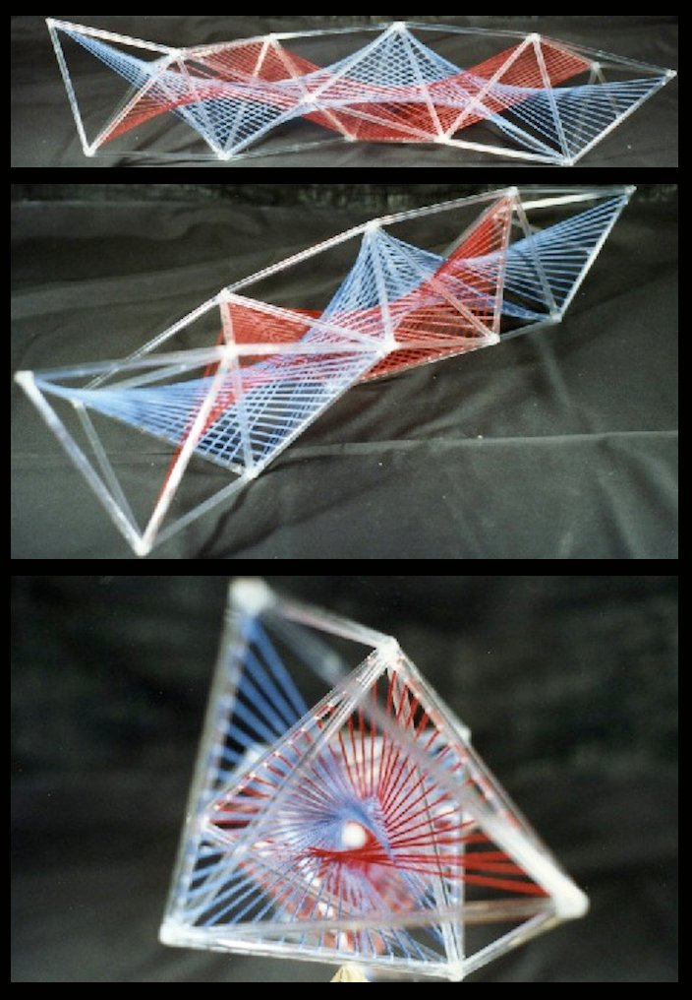
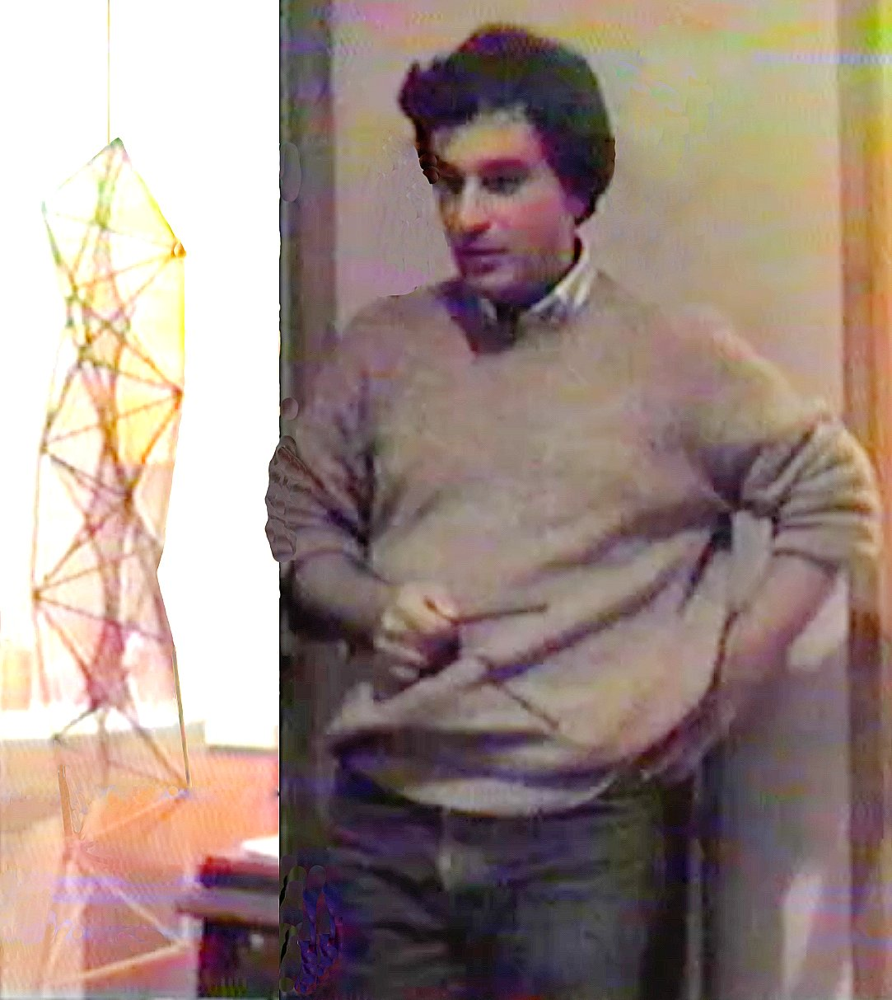
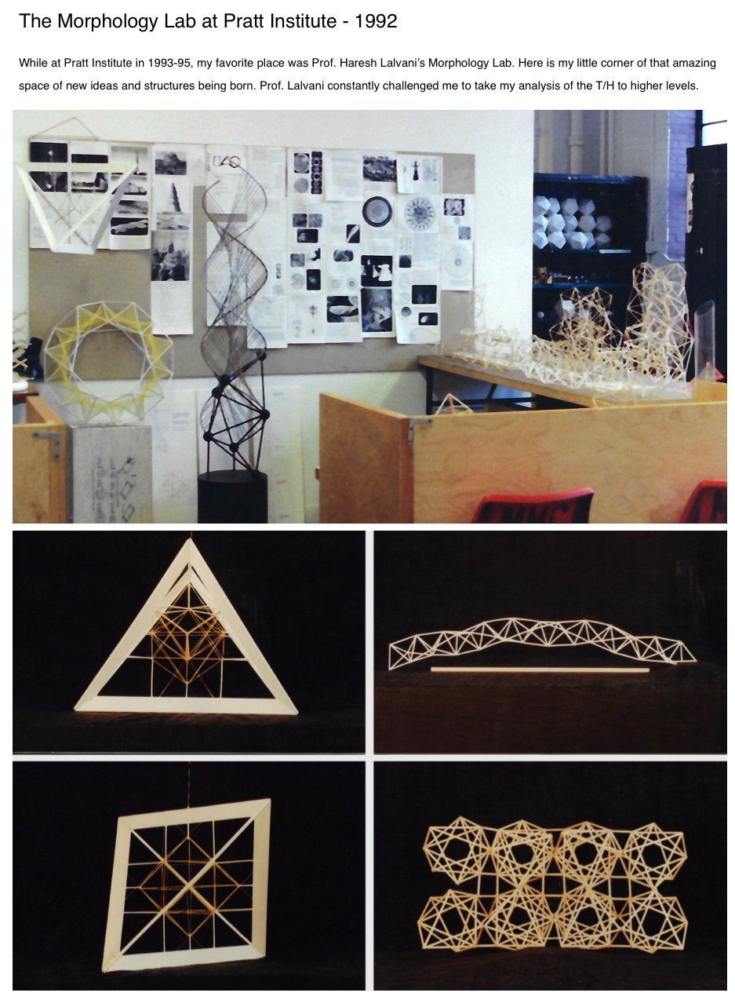
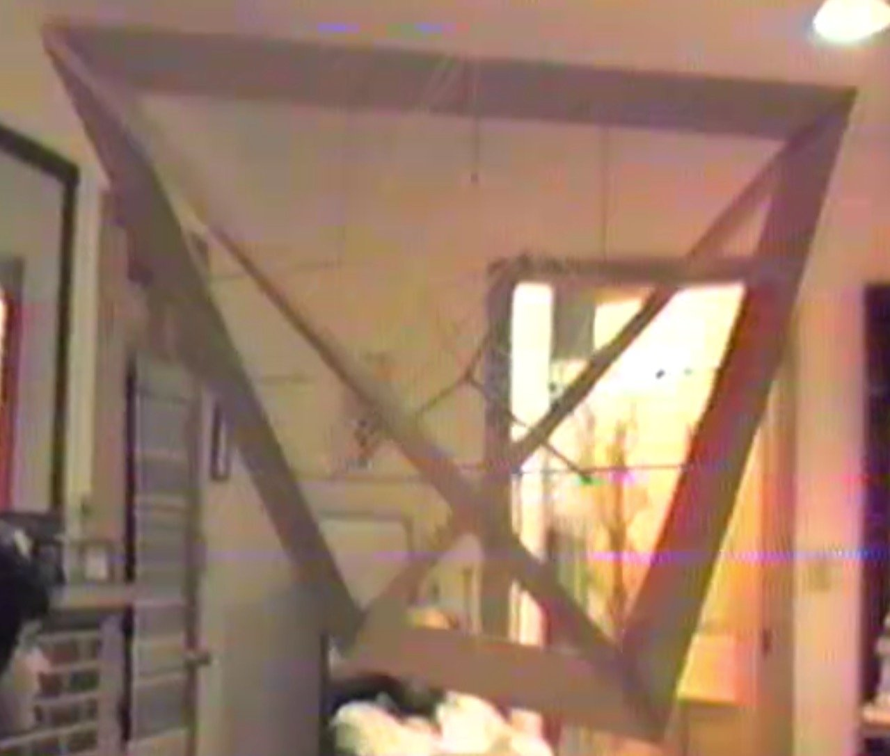
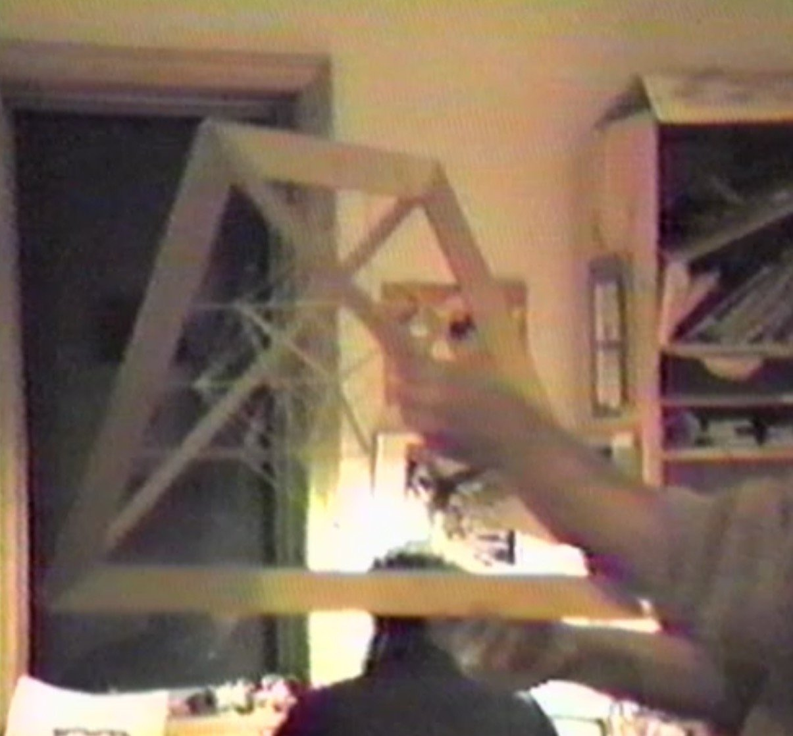

MODEL3D Exploration
Kites to Tetra Helices




The first time I saw a Tetrahedron was in a biography entitled "Genius At Work" about Alexander Graham Bell. Of his many inventions, from the Iron Lung to aircraft wings for the Navy, I loved the large TETRAHEDRON KITES built of metal tubes, some of which were large enough with sufficient force to lift people and animals right off the ground!
Inspired by his tetrahedral kites I built my own, exploring ways of making them stronger and lighter using internal bracing from opposite outer edges following the natural vectors of edge sub-divisions, what I later learned was called "cell-frequency" by Buckminster Fuller in his seminal book "Synergetics".... and even more recently a mathenatical function called "Fractals".
I studied "Synergetics" in greater depth in 1984, and became fascinated with his theoretical argument that the traditional X, Y, Z Cartesian coordinate system distorted our understanding of reality. He argued that everything that was alive and existed in Nature, from sub-atomic particals to cosmological structures, whether alive or not, did so based on polyhedral geometry. And that the Tetrahedron was a fundamental form at all scales. He believed that the face-bonded "Tetra-Helix", was a special case, an extension of a single tetrahedron that he believed could explain the structure of DNA. At the time of my reading of Synergetics in 1985, other theories prevailed, but still I felt there might be a connection somehow.
In the photo of his model above you can see an exploration with "parallel ruled lines" of warped planes over the exterior surfaces. Because of my experience building kites with internal bracing I decided to do the opposite, to explore the INTERIOR of the Tetra-helix instead. I created the first models using wooden dowels and plastic tubes with colored threads of Red and Blue string crossing through the internal centroids of each tetrahedron from the tetrahedral edges. This created 2 very beautiful hyperbolic-paraboloids that interpenetrated each other, and which in turn created an unexpected "Center Core Channel". Although the core looks circular when viewed down the axis of the tetrahelix, at any 90º cross section the shape proves to actually be two opposite arcs creating an almond shaped center area similar to the "Vesica Pisces", a very important and meaningful symbol in Christianity and other spiritual belief systems. The Vesica Pisces is a fundamental shape in Sacred Geometry.
I began to think that Tetra-Wave was more a model of an eletromagnetic wave or some kind of healing energy form. This is just one of the many correlations that began to emerge.





